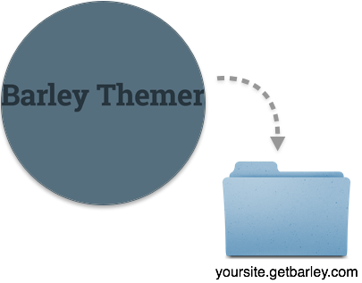

Get Barley set up with your new theme from Barley Themer in less than 10 minutes.
Pick which theme you want and buy and click that big beautiful green button. Once you've downloaded your theme hold onto that zip file, we'll come back to it.
Now you'll need to head over to Barley's Site to set everything up on their end.
Once you've picked a theme, it doesn't matter which theme you pick since we'll be replacing that, you'll set everything up to synce with your Dropbox account.
Now all you need to do is replace everything in your Barley Dropbox folder with your Barley Themer theme.
Now go to your site, click on the barley tab menu. Go to Sites > Manage Sites and select your site and sync with Dropbox.
Now you're ready to start adding your own content!
If you want to make any tweaks to the theme you do that locally and go through this sync process again.
